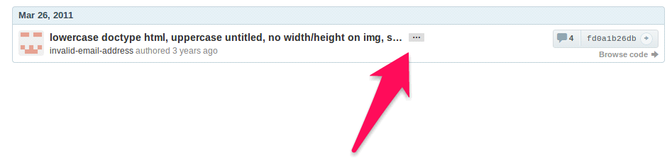
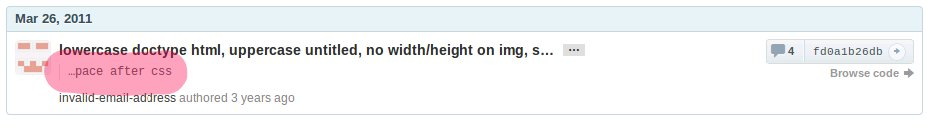
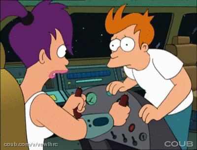
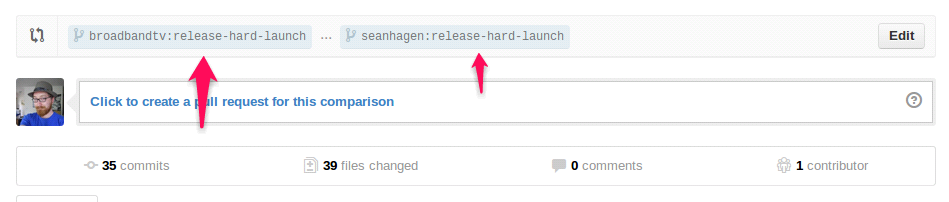

Git & GitHub
Git you some knowledge!
Created by Sean Patrick Hagen / @seanhagen
What's This For?
First: Git
Second: GitHub
Ready?
So, What Is Git?
At it's core, it's a distributed revision control system
As well as a source code management system

What Makes Git
Awesome?
It's Distributed
Distributed?
No central service to manage the revisions
What Makes Git
Awesome?
It's Branching!
Explore Ideas
Create branches to explore an idea, discard the branch if it doesn't work out
Explore Ideas
Or merge the branch in if it turns out to be an awesome idea

What Makes Git
Awesome?
Supports Just About Any Workflow
Easily create branches for features, bugs, tasks
Merge code quickly between those branches
Share the code really easily
What Makes Git
Awesome?
It's Got GitHub
While this isn't a feature of the tool, GitHub makes Git awesome.
Getting Down To Brass Tacks
At it's core, Git is a command line tool.
GUIs are okay, but the command line is where it's at.

Getting Started
Cloning Your Way To Victory
AKA: The Star Wars Approach
Not Really
Cloning Gets You Started
git clone <repository url>
Now you've got a copy of the code!
Examples Repo URLs
/home/sean/some-projectssh://[user@]host:path/to/repo.git
GitHub
GitHub tends to use the following format:
git@github.com:<your github username>/<repo name>.git
This presentation can be cloned from:
git clone git@github.com:seanhagen/git-presentation.git
Tips!
Here are a few flags that you might find useful when cloning:
--branch <name>
clone a specific branch--depth <num>
only clone the specified number of revisions
Getting Stuff Done
Okay, so you've got a copy of the code.
NOW WHAT?
What's The Status?
git status
Example Status
$ git status
# On branch feature-optimize-library-search
# Changes not staged for commit:
# (use "git add ..." to update what will be committed)
# (use "git checkout -- ..." to discard changes in working directory)
#
# modified: application/configs/application.ini
# modified: application/index.php
# modified: application/routers/example.php
#
no changes added to commit (use "git add" and/or "git commit -a")
Adding Files
This tells git about a new file, or lets it know about changes in a file.
git add path/to/file
Technically, you're actually "staging" content for your next commit
Here are a few useful flags for when you're adding files:
- --force
- -A, --all
Removing Files
Tell git you don't want it to track it anymore,
and to remove it from the working tree
git rm path/to/file
Seeing What's Changed
Once you've changed a file, sometimes you want to know what's changed before you commit it
git diff path/to/file
$ git diff application/routers/example.php
diff --git a/application/routers/example.php b/application/routers/example.php
index 7897b19..a948510 100644
--- a/application/routers/example.php
+++ b/application/routers/example.php
@@ -181,7 +181,7 @@ $app->delete( '/api/video/:videoid',
$getUserObject,
$checkVideoOwner,
- function( $videoid ) use ( $app, $env ) {
+ function( $videoid ) use ( $app, $env, $acl ) {
Commit Them Changes!
Now that you've added some files, time to store those changes!
git commit
Useful options:
- -a, --all
Be Awesome
Write Good Commit Messages
When you use commit, git will bring up an editor
for you to use to write a commit message.
Be awesome to your coworkers, and write a good description.
It should follow the following format:
Maximum 80 character brief description
In-depth list of modifications made to each file in the commit.
Why?
Because I Said So
Actually, it's because the git log ( and GitHub ) use the first 80 characters as a sort of title
 Pushing Stuff Around
Default: Origin
When you clone a repository, git will
setup a default remote for you: origin
You can push to it like so:
git push -u origin master
The -u tells git you'd like add it as a tracking reference
This means that later all you have to do is:
git push
It also helps when you want to pull stuff down later
Grabbing Stuff
It's pretty simple:
git pull <remote name> <branch>
If you used the -u flag when pushing,
you can just write git pull
Careful!
Git auto-merges when you do a pull
Fetch & Merge
Another way to accomplish a pull is to fetch and then merge:
git fetch origin
git merge origin/master
This just gives you more control over what's happening.
Remotes
Because git is a distributed system, you can have multiple remotes that you can push to.
If you want to add one, use the following:
git remote add <name> <url>
So?
Well, what if you want to keep your
repository up-to-date with upstream?
You could try to pull-request everything
into your own forked repo
Or you could just set up a remote to
track all the other repositories:
git remote add upstream git@github.com:broadbandtv/Porcupine.git
And then fetch and merge the right
branch whenever you need to:
git fetch upstream
git merge upstream/next
Oh No!
You messed up your last commit!
That's Okay!
We Have Magic On Our Side

Forgot some files?
Add the missing files, and then run:
git commit --ammend
Staged A File You Didn't Mean To?
That's easy:
git reset HEAD path/to/file
You Made A Bunch of Stupid Edits
Rollback time!
git checkout -- path/to/file

Pushed A Change That You Shouldn't Have?
That's okay.
You Can Fix It
Use git's revert!
git revert HEAD
That will create a patch that reverts the last commit, and commits that patch as a new commit
You can also specify a specific commit to revert, instead of 'HEAD'
Branching
Branching let's you keep areas of work separate, so that you can be switch between things that you're doing
Creating Branches
The easiest way to create a branch is the following:
git checkout -b <new branch name>
This is shorthand for:
git branch <new branch name>
git checkout <new branch name>
Listing Branches
Want to see what branches you've got available?
git branch
example
* master
testing
unicorns-and-rainbows
The '*' lets you know what branch you're on right now.
Add the -a flag to see ALL branches, even ones on remotes:
example
* master
testing
unicorns-and-rainbows
remotes/origin/master
remotes/origin/testing
remotes/origin/not-available-locally
remotes/origin/totally-awesome
But I Want That Branch Here!
So you've got a branch on one of your remotes.
But you want to work on that branch locally.
First, make sure you're up-to-date with that remote:
git fetch <remote name>
Then, create a branch off of that:
git checkout -b totally-awesome origin/totally-awesome
Note
When creating a tracking branch for something other than origin
it's a good idea to use a branch name that lets you know what
that branch tracks.
git fetch upstream
git branch --track upstream-next upstream/next
Merging For Glory!

Merging lets you take one branch and combine it with another
How?
Say you want to merge the code from the branch 'next' into the branch 'master'.
First make sure you're in the master branch.
git checkout master
Now, merge in the code from next.
git merge next
Keeping 'next' Up-to-date
If you've forked your repository on GitHub, here's two ways to keep your version of the 'next' branch up-to-date.
git checkout upstream-next
git pull
git checkout next
git merge upstream-next
Alternatively:
git pull upstream next
Conflict!
Sometimes merging doesn't go well
Occasionally when merging branches, you'll see something like the following:
> git pull upstream next
From git://git@github.com:broadbandtv/project-name
* branch upstream -> FETCH_HEAD
Auto-merging public/index.php
CONFLICT (content): Merge conflict in public/index.php
Automatic merge failed; fix conflicts and then commit the result.
This means that Git was unable to merge the differences between your local copy of a file and the copy stored in the remote.
Fix it!
The first step is to find out what the differences are.
You can open the files that have conflicts in them, and they will have inlined diffs that show you the differences between your local copy and the version you're trying to pull down.
Inline Diff?
They're not pretty.
<<<<<<< HEAD:mergetest
This is my third line
=======
This is a fourth line I am adding
>>>>>>> 4e2b407f501b68f8588aa645acafffa0224b9b78:mergetest
This doesn't look too bad, but try to resolve a merge conflict that spans hundreds of lines.
What About Tools?
git mergetool will launch a tool that
will help resolve merge conflicts.
It can help you resolve crazy merge conflicts without going nuts.

Fix it quicker!
However, if you just want to use your version or their version of the file, you can use one of the following commands:
$ git checkout --ours path/to/filename.ext # checks out OUR copy of the file
$ git checkout --theirs path/to/filename.ext # checks out THEIR copy of the file
$ git add path/to/filename.ext
$ git commit
Deleting Branches
Be careful when deleting branches! There is no way to recover a deleted branch!
Delete All The Things

git branch -d <branch name>
If the branch you're trying to delete hasn't been merged yet, git will throw up an error.
If you want to delete it anyways, use -D instead of -d.
Time for some fun.


Cherry Picking
What?
No.
Cherry picking is taking a commit ( or a range of commits ) from another branch and bringing them over to your current one.
It's similar to merging, but with much more fine-grained control.
Tell me how
First, check out the branch you want to cherry pick from
git checkout feature-thing
Next,use git log or GitHub to find the first 6 or 7 characters of the commit you want to cherry pick.
commit 851a061f353976dd37d11fe6e6d2ec21ccce8234
Author: Sean Patrick Hagen
Date: Thu Feb 20 18:47:06 2014 -0800
Then switch to the branch you want to insert the commit into:
git checkout my-awesome-feature
Now cherry-pick the commit you want:
git cherry-pick 851a061f
That's it!
This can be useful when you want to grab a bugfix from another branch, or when you've got a few commits you want to merge but don't want to actually do a full merge.
Bisecting
Couldn't Find A Funny Image
So Have James Baxter On A Ball
What is it?
And Why Should I Care?
git bisect helps you find a bad commit between any two commits.
I know that doesn't sound awesome
But hold on.
How To Run It
You can run git bisect manually or automatically.
Running It Manually
First, start up the bisecting process:
git bisect start
Then, tell give it a commit to start with.
And tell it if that commit is good or bad.
git bisect good a09c834f
Now give it the other end of the range you want to test out.
git bisect bad b38d80adf
Okay, Now What
Now git will start a binary search for you!
git will load up a revision and ask you if the commit is good or bad.
You answer with "git bisect good" or "git bisect bad".
Pretty Awesome
But You Said Something About Automated Bisecting?
I did!
Automated Bisecting
Throw Robots Into The Mix!
To automate the process is pretty similar to how you do it manually.
Use git bisect start to start,
Then git bisect good <commit hash> and git bisect bad <commit hash> to give it a range
Atomic Turbines To Full!
git bisect run <command>
Now you're off to the races. git will use that command on every commit, and will let you know when it finds the offending commit.
So if you've got a bunch of commits
and you know one of them is breaking a particular unit test
give git bisect run the command to run the unit test
OMG

Warning
Atomic Turbines Need Proper Care And Maintenance
When you give git bisect run a command to run, that command has to follow the Unix tradition for exit codes
It needs to return a 0 if it passes, and a non-zero exit code if it fails.
Blaming
For Fun And Profit
What?
Duh.
Git Blame?
git blame lets you see which commit belongs to the last time a line in a file was changed.
5099d201 Identity.php (Lewis Zimmerman 2014-02-05 14:25:40 -0800 20) public function setId($id)
5099d201 Identity.php (Lewis Zimmerman 2014-02-05 14:25:40 -0800 21) {
4ef3d169 Identity.php (Lewis Zimmerman 2014-02-05 15:10:44 -0800 22) $this->id = (int) $id;
ee5d5900 IdentityModel.php (Anthony Chernikov 2014-02-11 14:48:51 -0800 23)
5099d201 Identity.php (Lewis Zimmerman 2014-02-05 14:25:40 -0800 24) return $this;
Use With Caution
Or Don't
Check out git help blame to see some of the options, and check out the Git Book for more.
Stashing
Again, What?

Actually, That's Pretty Close
Not The Dog Part Though
That'd Just Be Silly
What is Stashing?
Stashing is similar to a commit, but without the commitment.
It lets you store your work so you can switch branches, without having to make a commit
An Example
Say you've been working on some code:
$ git status # On branch master # Changes to be committed: # (use "git reset HEAD..." to unstage) # # modified: index.html
And you want to switch to another branch to quickly fix a bug.
Stash Yo Stuff
Use git stash:
$ git stash
Saved working directory and index state \
"WIP on master: 049d078 added the index file"
HEAD is now at 049d078 added the index file
(To restore them type "git stash apply")
Clean!
Now your working directory is clean!
$ git status
# On branch master
nothing to commit (working directory clean)
Getting It Back
Now you've done everything you needed to, and you want to get back to where you were:
$ git stash apply # On branch master # Changes not staged for commit: # (use "git add..." to update what will be committed) # # modified: index.html
Stash Multiple Things?
You can keep making changes and stashing them.
If you want to see what you've got stashed, use git stash list:
$ git stash list
stash@{0}: WIP on master: 049d078 added the index file
stash@{1}: WIP on master: c264051... Revert "added file_size"
stash@{2}: WIP on master: 21d80a5... added number to log
GitHub!

What is this "GitHub" you speak of?
GitHub is where we keep all of our code. GitHub is just another remote that you can use, and we use it because it gives us some pretty awesome features.
Like What?
Forking
Pull Requests
Forking?
Sounds Dirty
Forking just creates a copy of a repository in your account.
This lets you work on code and get as messy as you like.
But keeps the main repo in a pretty usable state for QA
Most of the time
How Does I Fork?

This image is probably already out of date.
GitHub is super agile, so their page tends to change without warning.
Just look for a button that says "Fork"
Requesting That You Pull

What Are Pull Requests?
Return To Sender
Pull Requests are how you get code from your forked repo back into the main repository.
Click one of the two green buttons to start the pull request.
Next you'll see a screen with this at the top:
And then a list of your commits.
If you click on edit, you'll see something like this:

This lets you change what branch you're PR-ing from, and to.
Do's & Don'ts
Don't!
- PR into next or master.
- Create huge PRs.
- Add more commits to an open
PR after you've created it
DO!
- Give your PR a good name!
- Let your team know there's a PR to review
- Keep your PR's small
- Use the description to explain what the PR is for
- Do a local merge before doing the PR
- Bug your team to get your PR reviewed
Tips & Tricks
- You can use 'blame' in GitHub
- Add ?w=1 to any diff URL to ignore whitespace
- Add .diff or .patch to compare view page, pull request, or commit page URLs
- You can reply to notification emails instead of going to GitHub
- You can PR from branch to branch
That's All Folks
- http://zachholman.com/talk/git-github-secrets/
- http://git-scm.com/book/